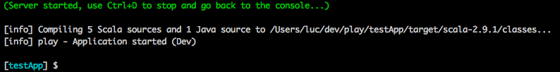

Ce guide vous montera comment configurer une application web Play pour pouvoir l’importer dans Scala IDE, comment configurer Scala IDE pour pouvoir utiliser correctement le Play framework et finalement comment développer un application web Play avec Scala IDE.
Eclipse 3.6.2 (Helios) avec Scala IDE pour Scala 2.9 installé (update site: http://download.scala-ide.org/releases-29/stable/site).
La page getting started (en anglais) contient les instructions pour l’installation de Scala IDE.
Une connaissance de base de l’interface utilisateur d’Eclipse est nécessaire.
Aucune connaissance du langage Scala est nécessaire (dans ce guide).
Aucune connaissance de Play framework est nécessaire (dans ce guide).
Pour pouvoir créer une web application Play, Play framework est nécessaire. Si vous ne l’avez pas encore installé, suivez ces quelques étapes, ou utilisez la documentation de Play.
Téléchargez Play framework 2.0-beta sur http://www.playframework.org/2.0.
Unzippez l’archive dans votre répertoire préféré. Nous utiliserons /path/to/play20 dans ce document.
Pour simplifier l’utilisation, ajoutez le répertoire de Play dans le PATH:
export PATH=$PATH:/path/to/play20
Dans votre répertoire de développement, demandez à Play de créer une nouvelle application web, de type simple Scala application.

Allez dans le répertoire de l’application.

Et lancez Play.

Dans Play, démarrez l’application web que vous venez de créer.

Vérifiez que l’application fonctionne: http://localhost:9000/.

Maintenant que l’application Play fonctionne, il faut la configurer pour pouvoir l’importer dans Scala IDE.
Le support eclipsify n’est pas integrated dans Play 2.0 pour le moment. Donc nous utilisons sbteclipse pour faire de l’application web un projet Eclipse.
D’abord, sortez de Play, en utilisant ctrl-d, puis exit.
Ajoutez sbteclipse à sbt en créant le fichier project/build.sbt avec le contenu suivant.
resolvers += Classpaths.typesafeResolver
addSbtPlugin("com.typesafe.sbteclipse" % "sbteclipse" % "1.5.0")

Retournez dans Play.

Générez la configuration du projet Eclipse.

Et relancez l’application web, de manière à ce qu’elle soit disponible plus tard.

Changer quelques préférences dans Eclipse va permettre de rendre son utilisation plus simple.
Ouvrez la internal web browser view dans Eclipse, et vérifiez que vous pouvez accéder votre application web.

Configurez Eclipse pour que les changements dans le système de fichier soient charger automatiquement.

Si vous n’avez pas la version Web Development Tools d’Eclipse installée, Eclipse ouvre les fichiers .html dans un navigateur. Configurer Eclipse pour qu’il utilise le Scala Editor à la place.

Tout est configuré, il est temps d’importer le projet dans Scala IDE.
Importez l’application Play 2.0 en tant que Existing Projects into Workspace.

Tout est parfait, tout compile.

Maintenant que tout est configuré, nous pouvons changer le contenu. Ajoutons le moyen d’avoir une citation sur la page principale.
D’abord, créez la classe models.Quote en utilisant l’assistant nouvelle Scala Class.

Ajoutez les variables à models.Quote.
package models
case class Quote(val text: String, val author: String) {
}
Ajoutez un paramètre supplémentaire à la vue index.scala.html et modifiez la mise en page.
@(message: String, quote: models.Quote)
@main("Welcome to Play 2.0 beta") {
@play20.welcome(message)
<p>@quote.text<em> - @quote.author</em></p>
}
Les templates sont transformés en code Scala par le Play framework, donc utilisez le bouton refresh du navigateur interne pour l’effectuer.
Play répond avec une erreur compilation, l’application n’utilise pas le template correctement. L’erreur est aussi visible dans le code de Application.scala.

Corrigez le code de l’application, en utilisant une citation élégante.
def index = Action {
Ok(views.html.index("Your new application is ready.",
Quote("Citer les pensees des autres, c'est regretter de ne pas les avoir trouvees soi-meme.",
"Sacha Guitry")))
}
Le code compile. Vérifiez le résultat dans le navigateur interne.

Vous avez maintenant tout ce dont vous besoin pour créer de belles applications web avec Play 2.0 et Scala.
Pour plus d’information sur Play 2.0, allez voir le wiki Play 2.0.
Pour plus d’information sur Scala, allez sur le site de documentation ou récupérez le eBook téléchargeable.


{kind=link}